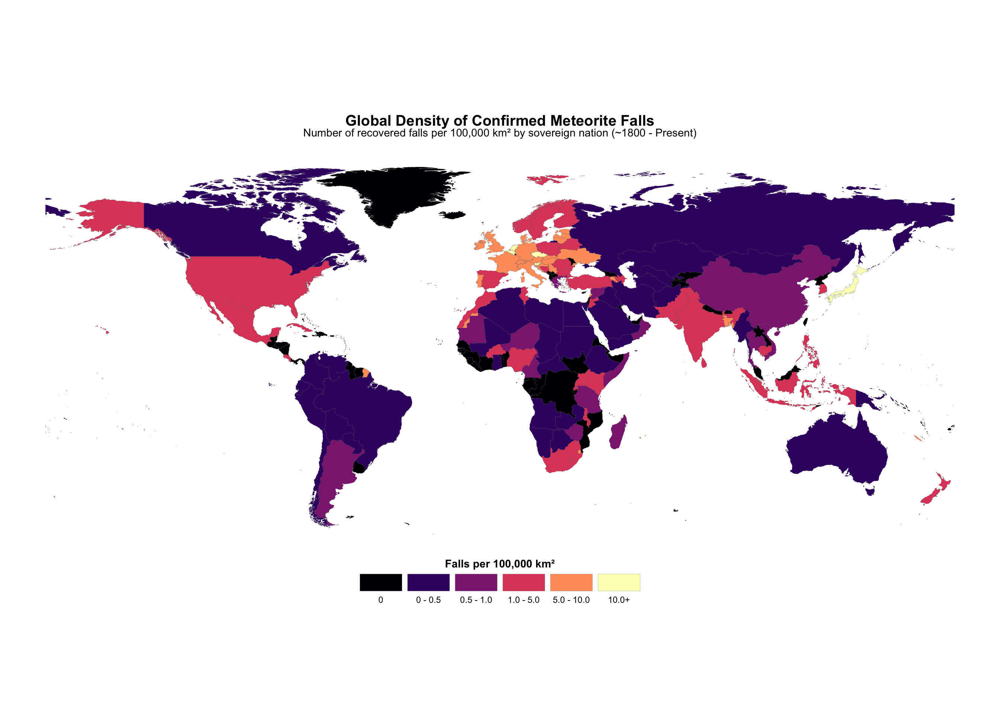
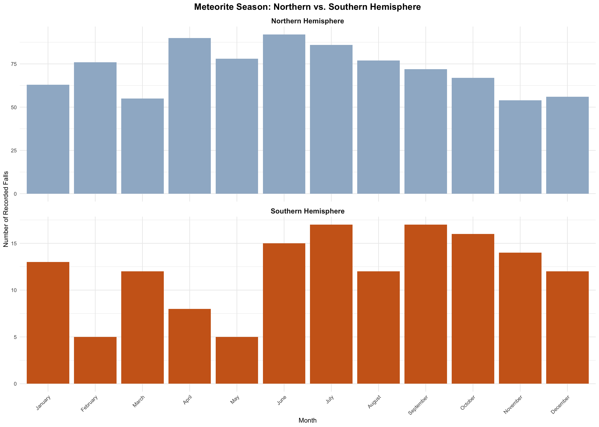
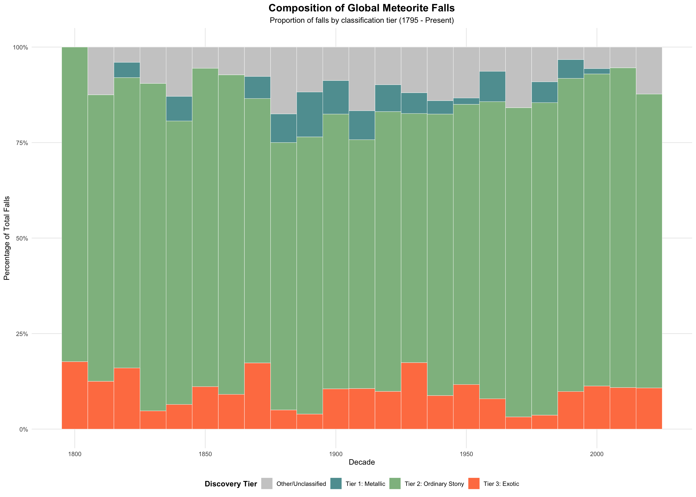
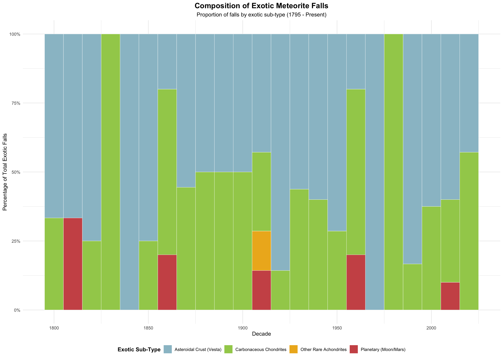

Meteorites are fragments of extraterrestrial material that survive their passage through Earth’s atmosphere and are recovered on the surface. Most originate from asteroids, though some come from differentiated bodies such as the Moon and Mars. They are commonly classified into broad groups based on composition and structure, including stony, iron, and achondritic meteorites. These materials provide direct physical samples of objects formed during the early history of the solar system.
The study of meteorite falls relies on recorded observations of objects seen entering the atmosphere and subsequently recovered. These records span several centuries and come from a combination of historical accounts and modern monitoring efforts, so the available data reflects both the physical processes governing meteorite entry and the conditions under which observations are made. This project analyzes a dataset of confirmed meteorite falls to examine patterns in geographic distribution, timing, and classification.
# Load all required packages quietly
suppressMessages({
library(tidyverse)
library(rvest)
library(janitor)
library(sf)
library(rnaturalearth)
library(rnaturalearthdata)
library(forcats)
})The dataset for this analysis is compiled from tables on Wikipedia’s “Meteorite fall” page, which document both historically recorded falls and more recent events detected through modern monitoring systems. Because the page separates meteorite records into distinct sections - “Recent falls” and “Falls before automated monitoring” - the scraper retrieves each table individually and combines them into a unified dataset. This preserves the distinction between observation eras while allowing for consistent analysis across the full time range.
The raw tables contain a mixture of structured and unstructured text, including embedded citation markers, formatting artifacts, and inconsistent naming conventions. To produce a clean dataset, text fields are processed using regular expressions to remove bracketed references and extraneous symbols. Key variables - including meteorite name, fall date, country, region, and classification - are extracted by column position to ensure stability across changes in table formatting. Additional variables are derived from the fall date, including year and month, allowing for temporal analysis at multiple scales.
After cleaning, the dataset contains a standardized record of meteorite falls spanning from the late eighteenth century to the present. Each entry includes geographic information, classification type, and temporal markers, providing a consistent foundation for examining global distribution patterns, seasonal trends, and compositional differences among meteorites.
# ---- 1. Fetch the page ----
url <- "https://en.wikipedia.org/wiki/Meteorite_fall"
page <- read_html(url)
# ---- 2. Identify correct tables ----
get_table_after_text <- function(html_doc, header_text) {
target_node <- html_doc %>%
html_elements("h2, h3") %>%
keep(~ str_detect(html_text(.x), header_text))
if (length(target_node) == 0) stop(paste("Header not found:", header_text))
target_node %>%
html_element(xpath = "following::table[1]") %>%
# header = FALSE prevents the "NULL names" error
html_table(fill = TRUE, header = FALSE)
}
# ---- 3. Parse and name columns manually ----
recent_raw <- get_table_after_text(page, "Recent falls") %>%
pluck(1) %>%
slice(-1)
historical_raw <- get_table_after_text(page, "Falls before automated monitoring") %>%
pluck(1) %>%
slice(-1)
# ---- 4. Map columns by position (stable across header changes) ----
process_data <- function(df, period_label) {
df %>%
transmute(
name = .[[1]],
fall_date = .[[3]],
country = .[[4]],
region = .[[5]],
classification = .[[6]],
period = period_label
)
}
meteorites <- bind_rows(
process_data(recent_raw, "1959–2025"),
process_data(historical_raw, "1794–1959")
) %>%
# ---- 5. Final data polish ----
mutate(
across(c(name, country, region, classification),
~str_trim(str_remove_all(as.character(.), "\\[.*?\\]|[†‡§*♠♥♦♣±]"))),
# Remove the "link" text that often gets stuck to the name
name = str_remove(name, "link$"),
year = as.numeric(str_extract(fall_date, "\\d{4}")),
month = str_extract(fall_date, "[A-Za-z]+")
) %>%
filter(!is.na(year))
# Preview results
glimpse(meteorites)## Rows: 1,234
## Columns: 8
## $ name <chr> "Wadsworth", "Okulovka", "McDonough", "Maoming", "Bordj…
## $ fall_date <chr> "17 March 2026", "27 October 2025", "26 June 2025", "28…
## $ country <chr> "USA", "Russia", "USA", "China", "Algeria", "Poland", "…
## $ region <chr> "Ohio", "Novgorodskaya", "Georgia", "Guangdong", "El Ou…
## $ classification <chr> "Eucrite-mmict", "LL6", "L6", "L6", "L6", "L6", "H6", "…
## $ period <chr> "1959–2025", "1959–2025", "1959–2025", "1959–2025", "19…
## $ year <dbl> 2026, 2025, 2025, 2025, 2025, 2025, 2024, 2024, 2024, 2…
## $ month <chr> "March", "October", "June", "May", "May", "February", "…The global distribution of meteorite falls is highly uneven, reflecting both natural processes and differences in observation and recovery. Rather than relying on raw counts alone, normalizing meteorite falls by land area provides a more meaningful comparison across countries of vastly different sizes. Large nations such as the United States and China report high total numbers of meteorites, but these counts are partly a function of their geographic scale. A density-based analysis identifies where meteorites are recovered most frequently relative to area, allowing smaller countries to be evaluated on equal footing.
Several countries exhibit notably high meteorite fall densities. Mauritius, for example, shows the highest density in the dataset, despite having only a single recorded fall - a result of its small land area. Other high-density regions include Czechia, the Netherlands, Belgium, and Germany, where moderate numbers of recorded falls are concentrated within relatively small geographic boundaries. Japan also stands out, combining a large number of observed meteorites with a comparatively high density.
In contrast, much of the world shows little to no recorded meteorite activity, with over one hundred countries reporting zero documented falls. This pattern is unlikely to reflect true differences in meteorite arrival rates, which are expected to be broadly uniform across Earth’s surface. Instead, it demonstrates the role of observational bias: meteorites are more likely to be detected and recorded in regions with higher population density, stronger scientific infrastructure, and longer histories of documentation.
# ---- 1. Prepare map ----
world <- ne_countries(scale = "medium", returnclass = "sf") %>%
filter(continent != "Antarctica") %>%
mutate(area_km2 = as.numeric(st_area(.)) / 1e6)
# ---- 2. Match naming convention ----
stats_final <- meteorites %>%
mutate(
c_clean = str_trim(str_remove_all(country, "\\[.*?\\]")),
c_map = case_when(
c_clean %in% c("USA", "United States", "US") ~ "United States of America",
c_clean %in% c("Russia", "Russian Federation") ~ "Russia",
c_clean == "Czech Republic" ~ "Czechia",
c_clean == "Republic of Korea" ~ "South Korea",
c_clean == "Burma" ~ "Myanmar",
c_clean == "Bosnia and Herzegovina" ~ "Bosnia and Herz.",
c_clean == "Central African Republic" ~ "Central African Rep.",
c_clean == "Swaziland" ~ "eSwatini",
str_detect(c_clean, "Burkina Faso") ~ "Burkina Faso",
c_clean == "Western Sahara" ~ "W. Sahara",
c_clean == "Tibet" ~ "China", # map usually attributes Tibet to China
TRUE ~ c_clean
)
) %>%
group_by(c_map) %>%
summarise(total_falls = n(), .groups = 'drop')
# ---- 3. Join and bin ----
map_plot_data <- world %>%
left_join(stats_final, by = c("name" = "c_map")) %>%
mutate(
total_falls = replace_na(total_falls, 0),
density = (total_falls / area_km2) * 100000,
density_range = cut(
density,
breaks = c(-Inf, 0.00001, 0.5, 1, 5, 10, Inf),
labels = c("0", "0 - 0.5", "0.5 - 1.0", "1.0 - 5.0", "5.0 - 10.0", "10.0+"),
include.lowest = TRUE
)
)
# ---- 4. Plot ----
ggplot(data = map_plot_data) +
geom_sf(aes(fill = density_range), color = "grey30", size = 0.05) +
scale_fill_viridis_d(
option = "magma",
name = "Falls per 100,000 km²",
guide = guide_legend(nrow = 1, title.position = "top", label.position = "bottom", keywidth = unit(1.5, "cm"))
) +
labs(
title = "Global Density of Confirmed Meteorite Falls",
subtitle = "Number of recovered falls per 100,000 km² by sovereign nation (~1800 - Present)"
) +
theme_void() +
theme(
plot.title = element_text(hjust = 0.5, face = "bold", size = 15),
plot.subtitle = element_text(hjust = 0.5, size = 11, margin = margin(b = 10)),
legend.position = "bottom",
legend.title = element_text(face = "bold", hjust = 0.5)
)
Recorded meteorite falls show a clear seasonal pattern that differs between hemispheres, but this pattern reflects observation opportunities rather than variations in actual meteorite arrivals. The Northern Hemisphere accounts for 864 recorded falls, compared to 146 in the Southern Hemisphere. In the north, recorded falls increase through spring, peaking in April (10.4%) and June (10.6%), while in the south the highest percentages occur in July, September, and October (≈11%).
If meteorites fell strictly according to orbital or celestial factors, both hemispheres would show peaks in similar months. Instead, the observed seasonal differences correspond with periods of warmer weather and longer daylight, when people are more likely to be outdoors and able to witness falls. The reduction in recorded events during cold or dark months indicates that the historical record is shaped by human presence rather than changes in the frequency of meteorite falls.
# ---- 1. Coordinate-based hemisphere mapping ----
world_coords <- map_data("world") %>%
group_by(region) %>%
summarise(lat = mean(range(lat)), .groups = 'drop') %>%
rename(country = region)
# ---- 2. Clean and drop unneeded levels ----
valid_months <- c("January", "February", "March", "April", "May", "June",
"July", "August", "September", "October", "November", "December")
meteorite_hemispheres <- meteorites %>%
# Ensure the month column is string data
mutate(month = str_trim(as.character(month))) %>%
# Only keep rows where month is in valid list
filter(month %in% valid_months) %>%
left_join(world_coords, by = "country") %>%
mutate(
hemisphere = case_when(
lat >= 0 ~ "Northern Hemisphere",
lat < 0 ~ "Southern Hemisphere",
TRUE ~ "Unknown"
),
# Re-factor with only the months
month = factor(month, levels = valid_months)
) %>%
filter(hemisphere != "Unknown")
# ---- 3. Plot ----
ggplot(meteorite_hemispheres, aes(x = month, fill = hemisphere)) +
geom_bar(show.legend = FALSE) +
facet_wrap(~hemisphere, scales = "free_y", ncol = 1) +
scale_fill_manual(values = c("Northern Hemisphere" = "slategray3", "Southern Hemisphere" = "chocolate3")) +
labs(
title = "Meteorite Season: Northern vs. Southern Hemisphere",
x = "Month",
y = "Number of Recorded Falls"
) +
theme_minimal() +
theme(
plot.title = element_text(face = "bold", size = 15, hjust = 0.5),
plot.subtitle = element_text(size = 11, hjust = 0.5),
axis.text.x = element_text(angle = 45, hjust = 1),
strip.text = element_text(face = "bold", size = 12)
)
Analysis of meteorite classification by decade reveals a consistent dominance of ordinary stony meteorites (Tier 2) across the past two centuries. These chondritic meteorites, which make up roughly 65–85% of observed falls per decade, are primarily composed of silicate minerals and are thought to represent the most common material from the early solar system. Metallic meteorites (Tier 1), typically 2–8% of falls, are largely iron-nickel alloys and originate from the cores of differentiated parent bodies known as planetesimals. Exotic meteorites (Tier 3), generally 3–18% of falls, include rare types such as lunar and Martian fragments, HED meteorites from the crust of asteroid Vesta, and carbonaceous chondrites rich in organic compounds and water-bearing minerals. Other or unclassified meteorites make up a small fraction, usually under 15%.
# ---- 1. Classification mapping ----
meteorite_trends <- meteorites %>%
mutate(
year = as.numeric(str_extract(fall_date, "\\d{4}")),
type_tier = case_when(
# Tier 1: Metallics (core fragments)
str_detect(classification, "Iron|Pallasite|Mesosiderite|IAB|IIAB|IIIAB") ~ "Tier 1: Metallic",
# Tier 3: Exotics (planetary fragments)
str_detect(classification, "Achondrite|Shergottite|Nakhlite|Eucrite|Howardite|Diogenite|Lunar|Martian|^C[V|M|I|O|R|K][0-9]") ~ "Tier 3: Exotic",
# Tier 2: Stonies
str_detect(classification, "^[H|L|E|R][L]*[3-6]") ~ "Tier 2: Ordinary Stony",
TRUE ~ "Other/Unclassified"
)
) %>%
filter(year >= 1800 & year <= 2025) %>%
mutate(decade = (year %/% 10) * 10)
# ---- 2. Plot ----
ggplot(meteorite_trends, aes(x = decade, fill = type_tier)) +
geom_histogram(
position = "fill",
binwidth = 10,
color = "white",
linewidth = 0.2
) +
scale_y_continuous(labels = scales::percent) +
# Manual color assignment
scale_fill_manual(
values = c(
"Tier 1: Metallic" = "cadetblue",
"Tier 2: Ordinary Stony" = "darkseagreen",
"Tier 3: Exotic" = "coral",
"Other/Unclassified" = "grey80"
),
name = "Discovery Tier"
) +
labs(
title = "Composition of Global Meteorite Falls",
subtitle = "Proportion of falls by classification tier (1795 - Present)",
x = "Decade",
y = "Percentage of Total Falls"
) +
theme_minimal() +
theme(
plot.title = element_text(face = "bold", hjust = 0.5, size = 15),
plot.subtitle = element_text(hjust = 0.5, size = 11),
legend.position = "bottom",
legend.title = element_text(face = "bold", hjust = 0.5),
panel.grid.minor = element_blank()
)
The exotic meteorites show a varied composition across decades. Asteroidal crust fragments from Vesta dominate many decades, particularly from the 1920s through 2010s. Carbonaceous chondrites appear consistently throughout the record but are generally less common, often representing 25–60% of exotic falls in a given decade. Planetary fragments from the Moon and Mars are rare, appearing sporadically (e.g., 1810, 1860, 1910, and 2010), while other rare achondrites contribute only occasionally.
# ---- 1. Filter for Tier 3 and sub-classify ----
tier3_breakdown <- meteorites %>%
mutate(
year = as.numeric(str_extract(fall_date, "\\d{4}")),
# Identify the specific 'exotic' sub-types
exotic_type = case_when(
# Planetary: Fragments of the Moon and Mars
str_detect(classification, "(?i)Lunar|Martian|Shergottite|Nakhlite|Chassignite") ~ "Planetary (Moon/Mars)",
# HED: Differentiated rocks from the asteroid Vesta
str_detect(classification, "(?i)Eucrite|Howardite|Diogenite") ~ "Asteroidal Crust (Vesta)",
# Carbonaceous
str_detect(classification, "(?i)^C[V|M|I|O|R|K][0-9]|Carbonaceous") ~ "Carbonaceous Chondrites",
# Other: Rare achondrites (Acapulcoites, etc.)
str_detect(classification, "(?i)Achondrite") ~ "Other Rare Achondrites",
TRUE ~ NA_character_
)
) %>%
# Focus only on the 'exotics'
filter(!is.na(exotic_type) & year >= 1800 & year <= 2025) %>%
mutate(decade = (year %/% 10) * 10)
# ---- 2. Plot ----
ggplot(tier3_breakdown, aes(x = decade, fill = exotic_type)) +
geom_histogram(
position = "fill",
binwidth = 10,
color = "white",
linewidth = 0.2
) +
scale_y_continuous(labels = scales::percent) +
# Manual color assignment
scale_fill_manual(
values = c(
"Planetary (Moon/Mars)" = "indianred3",
"Asteroidal Crust (Vesta)" = "lightblue3",
"Carbonaceous Chondrites" = "darkolivegreen3",
"Other Rare Achondrites" = "goldenrod2"
),
name = "Exotic Sub-Type"
) +
labs(
title = "Composition of Exotic Meteorite Falls",
subtitle = "Proportion of falls by exotic sub-type (1795 - Present)",
x = "Decade",
y = "Percentage of Total Exotic Falls"
) +
theme_minimal() +
theme(
plot.title = element_text(face = "bold", hjust = 0.5, size = 15),
plot.subtitle = element_text(hjust = 0.5, size = 11),
legend.title = element_text(face = "bold", hjust = 0.5),
legend.position = "bottom"
)